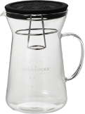
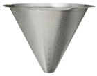

For Brewing
アイスコーヒーをおいしくいれるポイントをご紹介します。
[おすすめコーヒー器具]

グラスドリップコーヒーメーカー20
￥3,680
＞詳しくはこちら

オリジナルステンレスコーンフィルター
￥3,080
＞詳しくはこちら
Let’s Start Brewing
自分でコーヒーをいれてみたいけれど器具やコーヒー豆など何から準備すればいいの？
そんな方にピッタリなキットが登場！